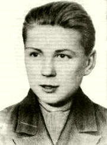

Борис Михайлович Дмитриев

Борис Михайлович Дмитриев (11 июня 1924 - 23 февраля 1944) — партизан Великой Отечественной войны, Герой Советского Союза (1944). Борис Дмитриев родился 11 июня 1924 года в Москве. Получил среднее образование в школе 243 (ныне Гимназия №1572). В 1942 году окончил спецшколу подрывников-минёров и в июле того же года был направлен в партизанскую группу под командованием Г. Н. Борозны, которая действовала в Осиповичском районе Могилёвской области, командовал в ней диверсионной группой. Борис Михайлович лично участвовал в подрыве 11 железнодорожных и 32 шоссейных мостов, 18 вражеских эшелонов, в результате чего было уничтожено 1260 гитлеровцев, 8 танков, 32 автомашины, 11 орудий, 154 тонны горючего. Его группа уничтожила в общей сложности 1400 железнодорожных рельсов, 11 железнодорожных и 32 шоссейных моста, 22 автомашины и 3 танка. 23 февраля 1944 года Дмитриев погиб в бою в деревне Каменичи Осиповичского района Могилёвской области Белорусской ССР. Похоронен в Осиповичах. Указом Президиума Верховного Совета СССР от 15 августа 1944 года за «образцовое выполнение боевых заданий командования на фронте борьбы с немецкими захватчиками и проявленные при этом отвагу и геройство» Борис Дмитриев посмертно был удостоен высокого звания Героя Советского Союза. Также был награждён орденом Ленина и медалью «Партизану Отечественной войны» 1-й степени. В честь Дмитриева названы школа и улица в Осиповичах.
На главную